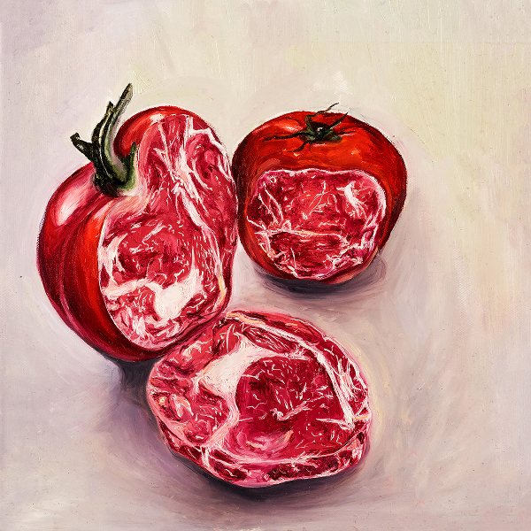

Don't judge a book by its cover (2020)
Media: Oil on canvas
Description: Inspired by the saying 'Don't judge a book by its cover,' this work explores lookism---prejudice based on appearance. As someone who has struggled with low self-esteem, I reflect on unconscious self-criticism and judgment. The idea emerged while dining with a friend who rejected cherry tomatoes as 'ugly' while admiring marbled meat. Her personification of foods based on looks became the foundation for this project.
